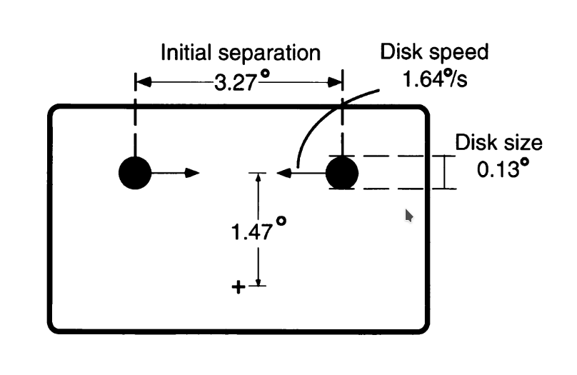

SOURCE CODE
ALL FILES
REPORT IN PDF
Hello, I'm Mario Sánchez García (ID: 17150868), an Erasmus student originally from Spain. I'm a fourth year student who came from the University Carlos III of Madrid, where I completed my first years in the Computer Science degree.
This website is my submission for the Multimodal Bounce assignment within the Interactive Multimedia module (CS4358). The objective of this assignment is to replicate the experiments from Watanabe's paper (Watanabe et al. (2001)) in order to document how including a new factor could affect the results, and how is this factor related to the cross-modal perception.
We call a perception "cross-modal" when it involves the interaction between two or more different sensory modalities, such as sound and light. In Watanabe et al. (2001), the experiments are based in introducing a visual ambiguity, which solution is influenced by audiovisual interaction. A two-dimensional display is presented to the observers, where two visually identical targets are moving across each other so they can be perceived either to bounce off or to stream through each other.
 Configuration of the two-dimensional display (Watanabe et al. (2001))In the article it is explained how despite the ambiguous nature of the visual stimulus, observers usually show a strong bias to see how the targets stream through each other. However, several factors have been reported to increase the relative frequency to percept how the targets bounce. The most remarkable one is to play a brief sound in the moment the targets coincide in the same point (simultaneous sound), suggesting that cross-modal perception is involved.
Using this last factor, Watanabe et al. prove that:
In the present assignment, the nature of the sound was changed in order to test how it could change the bounce-induction effect. The results of the experiments show that this effect is attenuated regardless of the moment the sound is played. Nevertheless, if we compare with the experiment that plays the sound when the dots collide (Experiment 2), the attenuation is more pronounced if the sound is played 200ms before (Experiment 3) and less pronounced if the sound is played 200ms after the "colission" (Experiment 4).